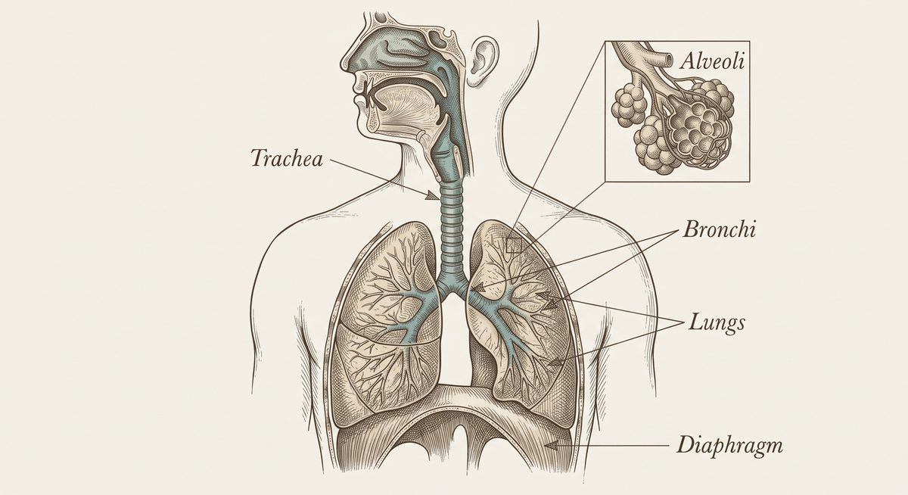
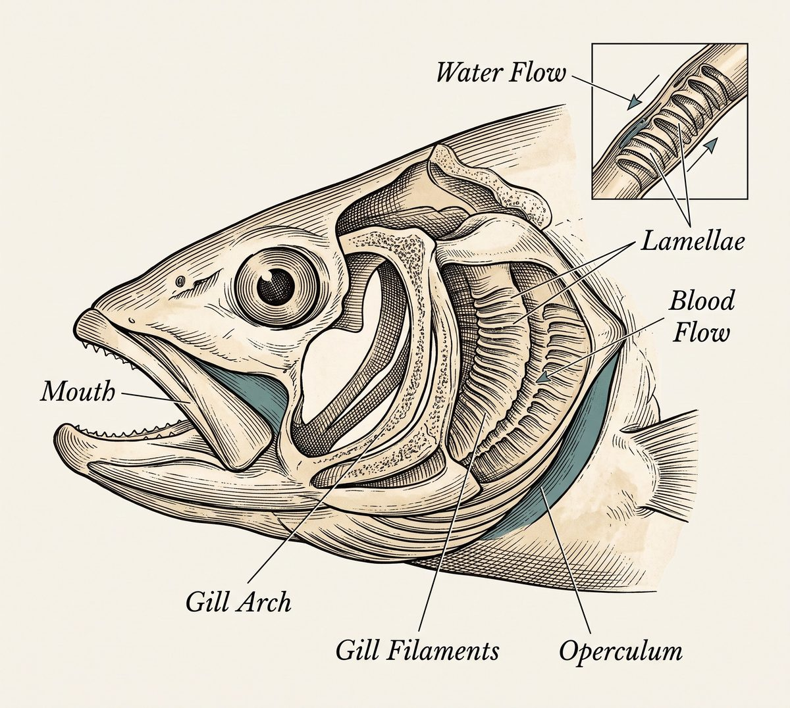
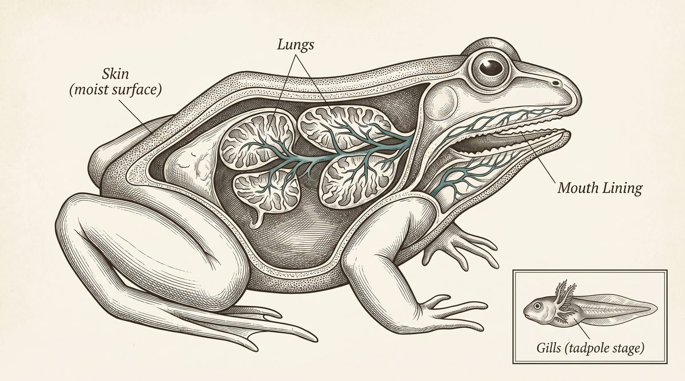
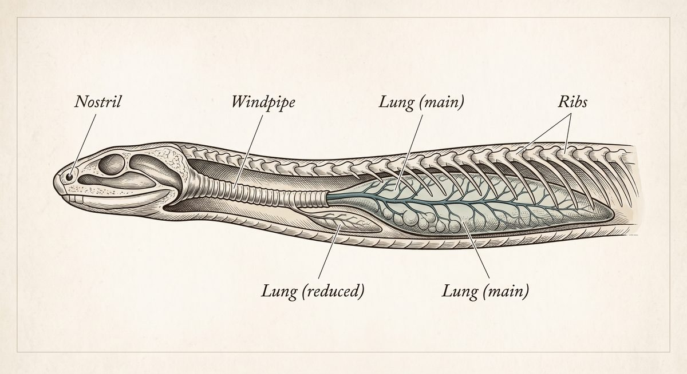
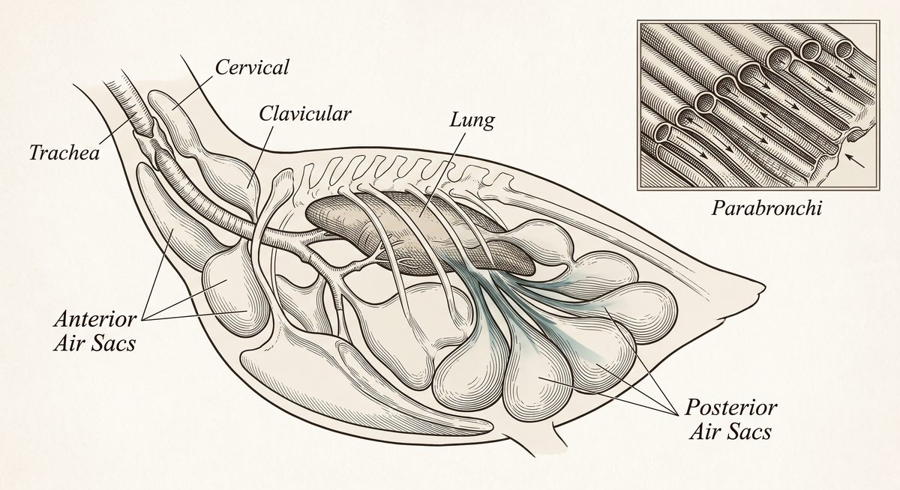
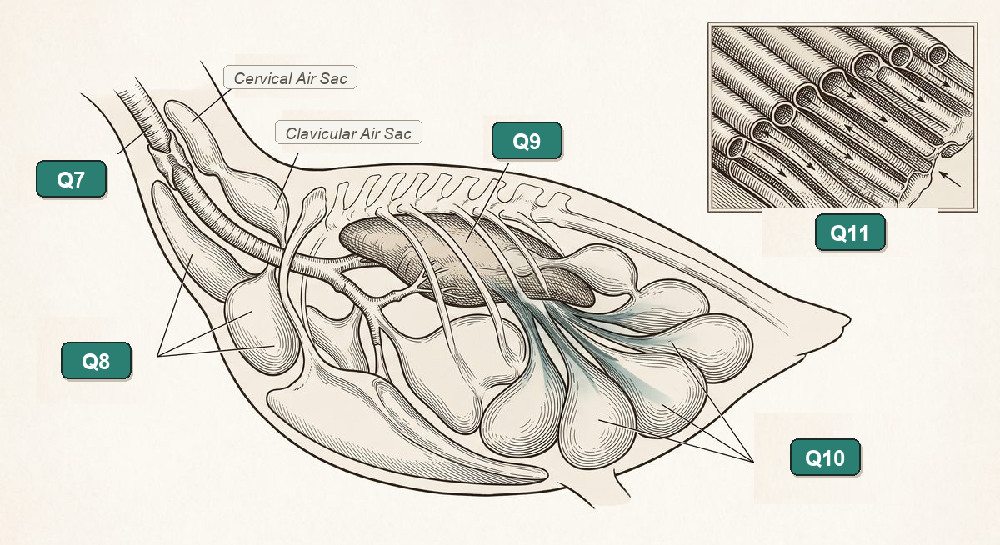
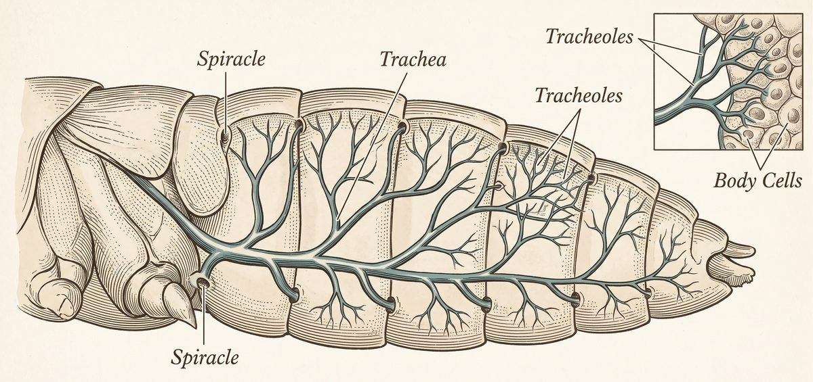
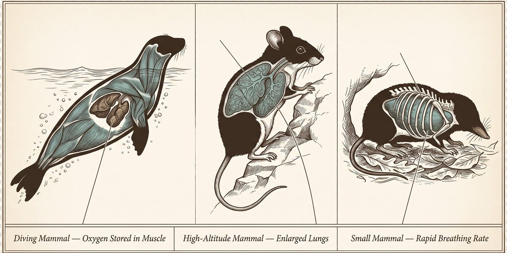

Breath of Life:
How Animals Breathe
Every living thing needs oxygen to release energy from food — and animals are uniquely equipped with wildly different ways to get it. Click through the diagrams, listen to the pronunciation, and master the English of biology.
Why does anything need to breathe?
Breathing isn't the actual goal — it's a delivery system. Here's the real reason every animal on this page needs oxygen.
Inside almost every cell in an animal's body, tiny structures called mitochondria combine oxygen with digested food to release usable energy. This process is called cellular respiration, and it produces carbon dioxide (CO₂) as waste — which the body must get rid of.
"Breathing," more properly called ventilation, is just the physical act of moving air or water past a gas-exchange surface. The actual swap — oxygen in, carbon dioxide out — happens by diffusion: gases naturally move from where they're crowded to where they're scarce, across a thin, moist surface.
- Gas exchange surfaces are always thin, moist, and have a large surface area — whether it's a lung, a gill, or an insect's tracheal tube.
- Oxygen moves in, CO₂ moves out — always in that direction, by diffusion, no pump required at the cellular level.
- Every system on this page is a variation on the same theme — purposeful biological design solving one vital problem in at least six different ways.
Fick's Law of Diffusion Simulator
Diffusion rate depends on three physical variables: Membrane Thickness, Surface Moisture, and Surface Area. Move the sliders below to see what happens to cellular oxygen uptake and ATP energy output!
The Human Respiratory System
Air travels through a branching tree of tubes that gets narrower and narrower, ending in 300–500 million tiny air sacs. Click each labeled part of the diagram.

- Path of air: nose/mouth → pharynx → larynx → trachea → bronchi → bronchioles → alveoli.
- The diaphragm is a dome-shaped muscle under the lungs. It flattens and pulls downward to make room for the lungs to expand — this is what actually causes air to rush in.
- Alveoli are the real destination: 300–500 million tiny sacs wrapped in capillaries, giving humans roughly 70 m² of gas-exchange surface — about the size of a tennis court, folded inside your chest.
- One-way ventilation: humans breathe in and out through the same tubes — air changes direction twice per breath, which (as you'll see in the bird section) is actually less efficient than some other designs.
Gills: Breathing Underwater
Water carries far less dissolved oxygen than air, so fish are equipped with an extraction system efficient enough to pull out most of what's available.

- Water flows in through the mouth and out over the gills — most fish never stop moving water across their gills, even while resting.
- Gill filaments are stacked with thousands of thin folds called lamellae, packed with capillaries, giving a huge surface area for such a small structure.
- Countercurrent exchange: blood inside the gills flows in the opposite direction to the water passing over them. This keeps a constant oxygen gradient along the whole gill, letting fish extract up to 80% of the oxygen in the water — far more than a simple one-directional flow could achieve.
- The operculum is a bony flap that covers and protects the gills, and helps pump water across them.
Countercurrent vs. Concurrent Flow Simulator
Compare the biological design of fish gills (opposite flow) with parallel flow. Watch the oxygen percentage along the gill capillary:
Triple-Threat Breathing
Amphibians are unique on this page: most species use three different respiratory surfaces across their lifetime.

- Larval stage (tadpoles): young amphibians breathe with external or internal gills, just like fish, since they live entirely underwater.
- Adult lungs: as they metamorphose, most amphibians grow simple, sac-like lungs — much less folded and efficient than mammal lungs.
- Cutaneous respiration: adult amphibians also breathe directly through their thin, moist skin, which is packed with blood vessels. This is why amphibian skin must stay damp — dry skin can't exchange gases.
- Mouth lining: the moist tissue inside the mouth and throat is also a gas-exchange surface, especially important for species with reduced lungs.
Lungs Built for Dry Land
Reptiles were among the first vertebrates to rely completely on lungs, with no gill or skin stage at any life stage.

- More internal surface area than amphibian lungs — reptile lungs have more folding and chambers, so they exchange gas more efficiently.
- No diaphragm: unlike mammals, reptiles use rib and body-wall muscles to expand and contract the chest cavity to move air in and out.
- Snakes have an elongated single lung (or one large lung and one tiny, non-functional one) to fit their long, narrow bodies.
- Turtles can't expand their ribs at all (their ribs are fused to the shell), so they use special muscles near the limbs to pump air in and out instead.
Air Sacs & One-Way Airflow
Flight demands enormous amounts of oxygen, so birds are designed with a system that beats every other vertebrate on this page for efficiency.

- 9 air sacs act like bellows, storing and pushing air through the lungs — but they don't do the actual gas exchange themselves.
- One-way airflow: air moves through the lung in a single direction on both inhale and exhale, unlike the in-and-out flow in human lungs. This means bird lungs are almost always full of fresh air.
- It takes two full breaths for one batch of air to travel all the way through a bird's system: air sac → lung → air sac → out.
- Parabronchi are tiny tubes inside the lung (instead of dead-end alveoli sacs) that let air flow continuously across the gas-exchange surface.
Bird 2-Breath Cycle Simulator
Step 1 (Inhale 1): Fresh air travels down the trachea directly into the Posterior (Rear) Air Sacs. (The rigid lungs do NOT expand like balloons).
Bird Anatomical Diagram Identification Challenge
Match each label [ Q7 ] through [ Q11 ] on the official exam illustration below using the Word Bank. Watch out: there are 3 extra distractors that do not belong to birds!

No Lungs, No Blood Required
Insects skip the bloodstream entirely for oxygen delivery — a completely different strategy from every animal so far.

- Spiracles are small openings along the sides of an insect's body — often one pair per body segment — where outside air enters.
- Trachea (not the same structure as the human trachea!) are branching tubes that carry air directly into the body from each spiracle.
- Tracheoles are microscopic branches at the very end of the tubes, thin enough to deliver oxygen straight to individual cells and take CO₂ away.
- No blood involved: because air is delivered directly to tissues, insect blood (hemolymph) doesn't carry oxygen at all — a major difference from every vertebrate on this page.
One Blueprint, Many Adaptations
Every mammal shares the same basic lungs-plus-diaphragm design as humans — but extreme environments reveal remarkable adaptations.
- Diving mammals like whales and seals collapse their lungs on deep dives to avoid decompression sickness, and instead store oxygen mostly in their blood and muscle tissue, not their lungs.
- Sperm whales can hold their breath for over 90 minutes, using extra-high concentrations of oxygen-storing proteins (myoglobin) in their muscles.
- High-altitude mammals like the deer mouse and some human populations living at high elevation possess larger lungs or blood that carries oxygen more efficiently.
- Small mammals like shrews have extremely fast breathing and heart rates — their small bodies lose heat quickly, so they need a constant, rapid supply of energy from respiration.

Seven Systems, Side by Side
Same problem — getting oxygen to cells and removing carbon dioxide — seven very different engineering solutions.
| Group | Main organ | Airflow pattern | Key adaptation | O₂ Extraction Efficiency |
|---|---|---|---|---|
| 1. Human (Terrestrial Mammal) | Lungs (300M alveoli) | Two-way (in & out) | Dome diaphragm muscle creates negative pressure; 70 m² gas-exchange surface | ~25% per breath |
| 2. Fish | Gills (with lamellae) | One-way (continuous water flow) | Countercurrent exchange maintains gradient along entire gill; protective bony operculum pump | Up to 80% (Highest extraction) |
| 3. Amphibian (Frog / Salamander) | Lungs + moist skin + mouth | Two-way lungs + continuous skin diffusion | Three respiratory surfaces across lifetime; larval tadpole gills; adult cutaneous respiration requires wet skin | Variable (~30-50%) |
| 4. Reptile (Snake / Turtle / Lizard) | Lungs (septate chambers) | Two-way (in & out) | Rib/body-wall muscles (no diaphragm); scaly waterproof skin prevents water loss but stops skin diffusion | ~30% |
| 5. Bird | Rigid lungs + 9 air sacs | One-way, continuous loop | Most efficient vertebrate system; fresh air flows across parabronchi during BOTH inhale and exhale | Continuous Fresh Air (Fuels Flight) |
| 6. Insect | Tracheal tubes & tracheoles | Direct diffusion through spiracles | Delivers oxygen directly to individual body cells without bloodstream or hemoglobin; limits max body size | Ultra-rapid over short distances |
| 7. Marine & Extreme Mammal | Collapsible lungs + myoglobin | Two-way tidal | Whales collapse lungs before deep dives to prevent bends, storing O₂ in muscle myoglobin (90 min dive!) | Massive myoglobin tissue store |
Academic English & Vocabulary Studio
To think, speak, and write like a scientist in English, you need two tools: key scientific vocabulary (often built from Greek and Latin roots) and academic sentence structures for comparing systems and explaining cause and effect.
1. Interactive Vocabulary, Pronunciation & Cognate Deck
Click 🔊 Listen on any card to hear its English pronunciation. Notice which words are True Cognates (similar to Spanish!) and which are Non-Cognates that require extra practice.
2. Three Grammar Patterns Every Science Student Needs
⚖️ Pattern A: Comparing Efficiency
Whereas / Unlike + [Noun A], [Noun B]...
🔗 Pattern B: Explaining Cause & Effect
[Cause], which means / so + [Result]
⚙️ Pattern C: Describing Processes (Passive Voice)
Quick Quiz
8 questions covering every system above. You'll see the right answer and a short explanation after each one.
Test Your Knowledge & Academic English
Complete all 7 activities to master both the biology of respiratory systems and the academic English used to explain them. Your progress is saved automatically.
📊 Student Progress Dashboard
🎯 Activity 1: Drag & Drop (or Tap-to-Place) Matching
Drag each respiratory organ to its animal group — or tap an organ card and then tap the animal box (works on tablets and phones!). Click any placed answer to remove it.
Respiratory Organs (Drag or Tap)
Animal Groups (Drop or Tap Here)
✏️ Activity 2: Scientific Vocabulary Cloze
Complete each sentence with the exact scientific noun or adjective from the word bank.
✅ Activity 3: Reading Comprehension — True or False
Read each statement carefully. You can change your selection anytime before clicking Submit All.
🔗 Activity 4: Matching Adaptations
Match each respiratory adaptation to the correct animal group.
📝 Activity 5: Academic Science Writing (with Sentence Frames)
Write 1–2 complete English sentences for each question. Use at least 3 target vocabulary badges per answer, or click 💡 Need an English Sentence Starter? for academic scaffolding.
🧩 Activity 6: English Grammar in Science (Comparatives, Connectors & Passive Voice)
Choose the grammatically correct academic English structure for each scientific sentence.
🎙️ Activity 7: Speak Like a Scientist (Pronunciation & Oral Fluency)
First click 🔊 Listen Model to hear the term and sentence. Then click 🎤 Speak Now and read the sentence aloud in English (or click ✓ Self-Check if your device has no microphone).
Breath of Life Game Lab
Every game below is designed to develop, illustrate, and explain the biology of respiratory systems and Academic English. Every pair you match, word you find, or puzzle you solve unlocks an Illustrated Scientific Card with native audio on the right!
🃏 Game 1: Anatomical & CLIL Memory Match
Choose a difficulty mode below. Flip two cards to match each Respiratory System with its Organ, Function, or Biblical Principle. Every match unlocks an illustrated diagram and audio explanation!
🔍 Game 2: Secret Scientist Word Search
Read the scientific clues on the right, deduce the English term, and click the first letter then the last letter of the word in the grid (horizontal, vertical, or diagonal). Finding a word illustrates and explains it!
🧩 Game 3: The Respiratory System Crossword
Click any clue or square to type the scientific English word. Completing a word unlocks its anatomical illustration and pronunciation!
➡️ ACROSS
⬇️ DOWN
🧪 Game 4: Breathing Pathway & English Syntax Builder
Click the scrambled blocks in the correct order to build the biological pathway or academic English sentence.
⚡ Game 5: 7-Systems Adaptation Blitz
🏆 Game 6: Breath of Life & Psalm 150:6 Championship
Everything That Breathes, Praise the LORD!
Every respiratory system on this page exists because God designed life to depend on breath — and He designed breath to declare His glory.
The Unit Principle
"Everything that breathes, praise the LORD!" — This is not just a poetic idea; it is a biological reality woven into every living creature. From the tiniest insect to the largest whale, every breath is an invitation from the Creator. The very act of breathing — drawing in oxygen, releasing carbon dioxide — is a daily, moment-by-moment reminder that we depend on the air God provides. Each respiratory system we have studied is a masterpiece of divine engineering, evidence that the same God who spoke the universe into being carefully designed the lungs, gills, tracheae, and air sacs that sustain life today.
Human Lungs — Dependence on God
Our lungs expand and contract roughly 20,000 times a day without conscious effort. This involuntary rhythm is a constant reminder that our very existence is held in God's hands. We cannot choose to breathe on our own — breath is a gift, moment by moment, from the One who gives life.
Fish Gills — The Fullness of Creation
Fish extract oxygen from water using countercurrent exchange — a system so efficient it seems almost impossible. God's wisdom is reflected in every design detail. Even in the depths of the ocean, where sunlight barely reaches, life thrives because the Creator planned for every habitat.
Amphibian Skin — Vulnerability and Trust
Amphibians breathe through their skin, which must stay moist to function. This dependence on their environment reflects the vulnerability God built into His creation — not as weakness, but as a design that calls creatures to rely on the conditions He provides.
Reptile Lungs — Adaptation with Purpose
Reptiles were the first vertebrates to breathe entirely with lungs, freed from the need for water. God equips His creatures for the environments He places them in. Every adaptation is purposeful, reflecting a Creator who knows the end from the beginning.
Bird Air Sacs — Praise in the Heights
Birds can fly over the highest mountains because their one-way airflow system is the most efficient of all vertebrates. As birds soar to the highest peaks, they declare the greatness of God — fulfilling Psalm 150:6 even at 7,000 meters above sea level.
Insect Tracheae — Even the Smallest Praise
Insects deliver oxygen directly to their cells through tiny tubes, without blood or a heart pumping. Even the smallest creatures on Earth are fearfully and wonderfully made. A grasshopper's respiratory system is as intentional as a whale's — both praise the LORD simply by existing.
Mammal Adaptations — Great and Small
From shrews that breathe hundreds of times per minute to whales that hold their breath for 90 minutes, mammals display the infinite creativity of God. Each adaptation — fast or slow, deep or shallow — is a unique expression of the same breath of life.